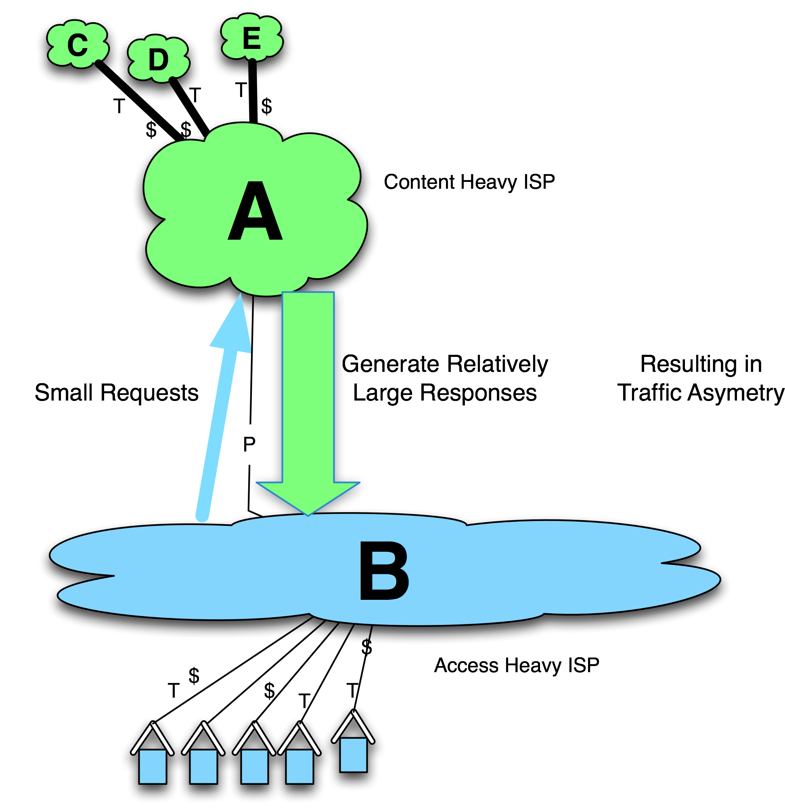
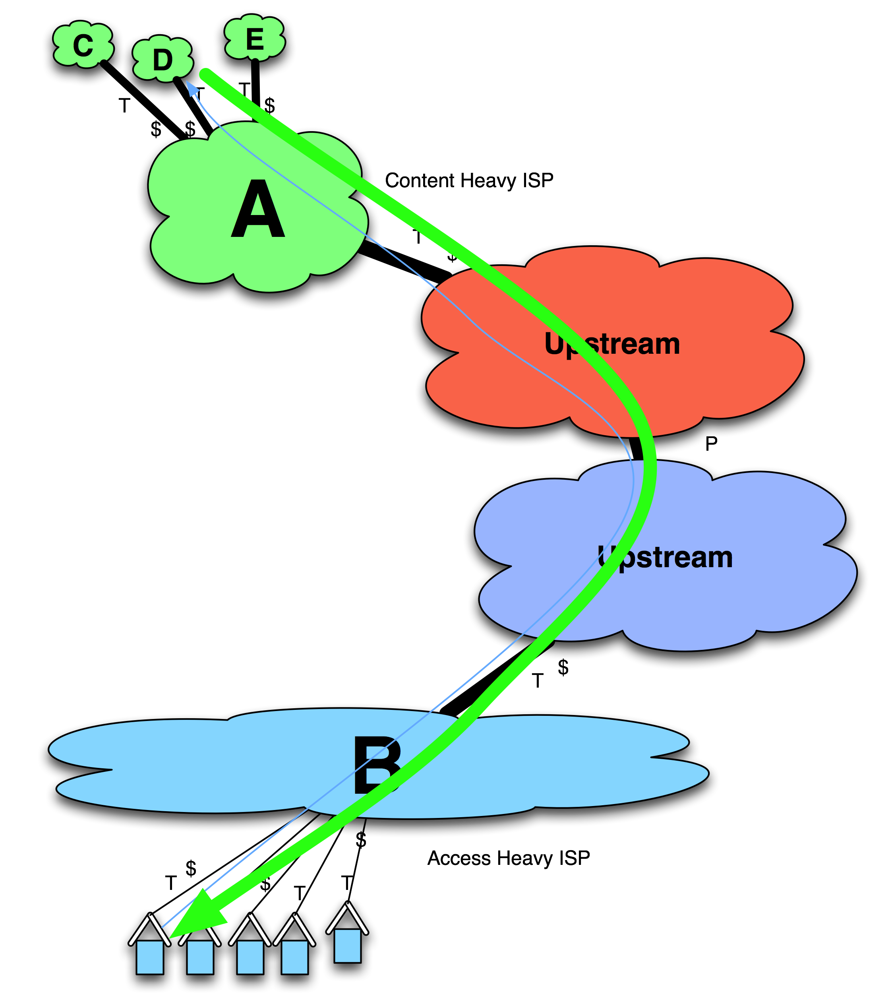
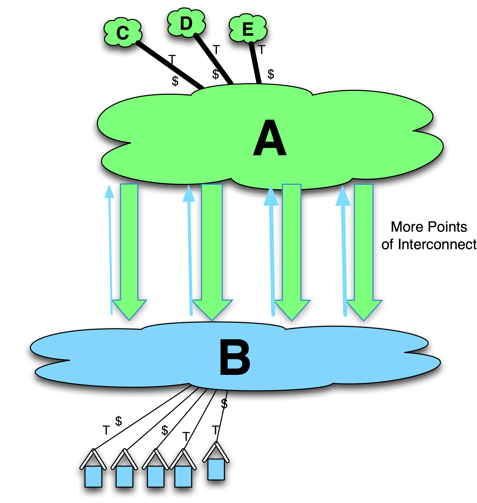

Tactic 8. Play Chicken
This confrontational tactic has been employed a dozen or so times, often in a highly visible manner – very visible in the Internet operations circles anyway. These peering disputes tend to highlight a perceived asymmetry in derived value from a peering relationship.
Most of the time the tactic goes as follows (Figure 11-18): Assume that ISP A and ISP B have a peering relationship. ISP A is content-heavy, meaning that the majority of its traffic is outbound, destined to the users that requested the content. ISP B is relatively access-heavy, meaning that the majority of the traffic is inbound, presumably the content that its customers requested. When the end user requests a web page, that user’s small request results in a relatively large response. There is inherent asymmetry of traffic.
The network infrastructure required to carry the traffic between the two parties may be asymmetric as well. ISP B might have just upgraded its national backbone at great expense, and ISP A is asking for more peering interconnect bandwidth. ISP B will argue that ISP A is “dumping” its traffic onto ISP B’s network and not paying a dime towards the cost of hauling that traffic across the country.
When the Play Chicken tactic is employed, it is always ISP B that wants to re-negotiate the relationship from free peering to some sort of paid relationship. ISB B points to the recent expensive upgrade to support the ISP A-to-ISP B traffic, and that the upgraded interconnect is already saturated with ISP A traffic. ISP B reminds ISP A that it gets no revenue for this traffic and that ISP A is making a ton of money from its content providers. This situation turns into a heated discussion, and ISP B indicates that it will have no choice but to disconnect the peering session. ISP A may stretch out these negotiations for as long as possible.

Figure 11-18. Traffic asymmetry sometimes leads to de-peering or playing chicken.
Both sides believe that the other side needs the free peering relationship more. The preconditions for the Play Chicken tactic are set.
Sometimes, the two parties negotiate a more equitable business arrangement and maintain their interconnection agreement without any operation disruption.
Sometimes ISP B disconnects the peering session and both ISP A and ISP B customers experience an operational disruption. The traffic may be delivered via another path, as shown in Figure 11-19.
In at least one case the Play Chicken tactic resulted in an Internet segmentation where customers of one ISP could not reach customers of another ISP.
In most cases peering is resumed after they agree to spread the traffic across more interconnection points. This solution reestablishes connectivity and reduces the distance that ISP A traffic has to be carried across ISP B’s infrastructure (Figure 11-20). In some cases financial considerations were involved as well.

Figure 11-19. During the crisis peered traffic traverses a more circuitous route.
The Play Chicken tactic is employed to abruptly change the terms of the peering relationship, but it threatens operational impact if neither side acquiesces. It really tests the assertion that both sides are receiving “about equal value” from the relationship.
It is worth pointing out that the aggressor of the play-chicken tactic rarely increases revenue from this tactic. The disruption is usually so significant – and the destruction of the inter-organizational relationship so severe – that the “loser” generally does not subsequently choose the aggressor as a supplier of transit or Paid Peering services.

Figure 11-20. Re-peering addressed with more points of interconnect.